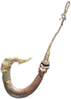
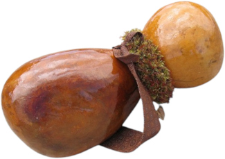
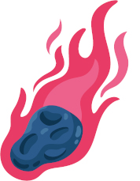

<div class="resources">
  <div class="condition"><span>Anzuelo de Mausi</span></div>
  <div class="condition"><span>Figura de la canoa de Ratonga</span></div>
  <div class="condition"><span>Calabaza de Mausi</span></div>
  <div class="condition"><span>Azuela de Rat'a</span></div>
  <div><span>Sal de Kane</span></div>
  <div class="condition"><span>Llama de Pele<br/><small>ligera</small></span><i>1d10</i></div>
</div>